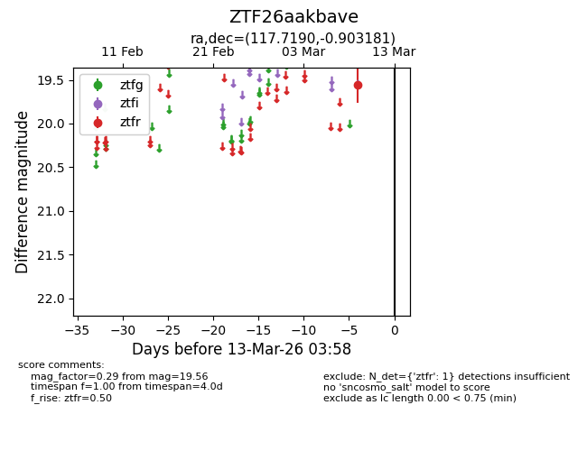
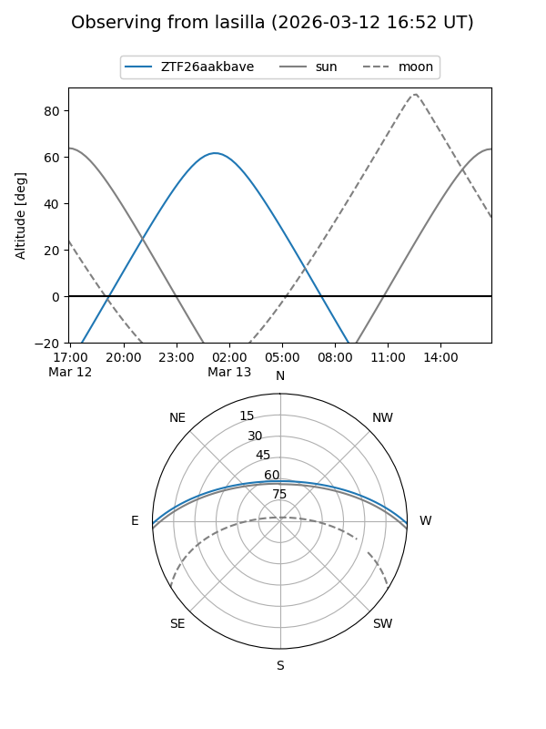
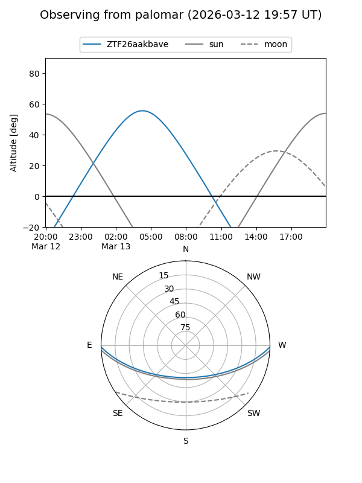

ZTF26aakbave
Target ZTF26aakbave at 2026-03-13 03:59
Aliases and brokers:
FINK: link
Lasair: link
ALeRCE: link
alt names
ZTF26aakbave (ztf,fink_ztf)
Coordinates:
equatorial (ra, dec) = 117.7190,-0.90318
equatorial (HMS+DMS) = 07:50:52.56,-00:54:11.45
galactic (l, b) = (220.6484,+12.76904)
Flags:
Photometry:
last ztfr=19.56
1 ztfr detections
Lightcurve

Visibility


Additional plots